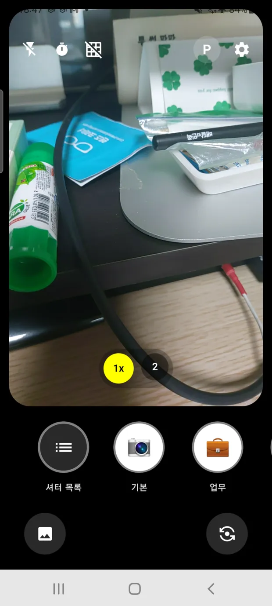
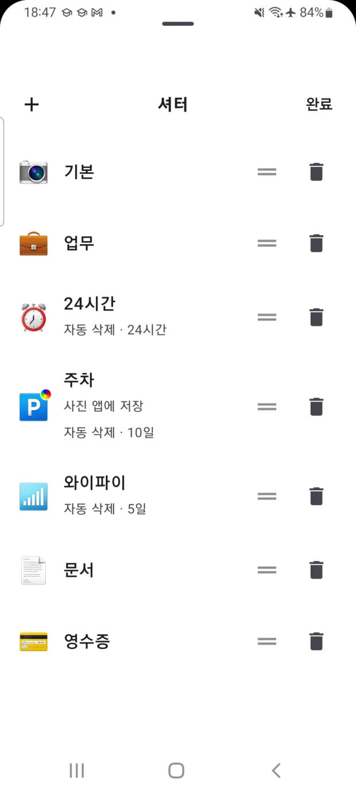
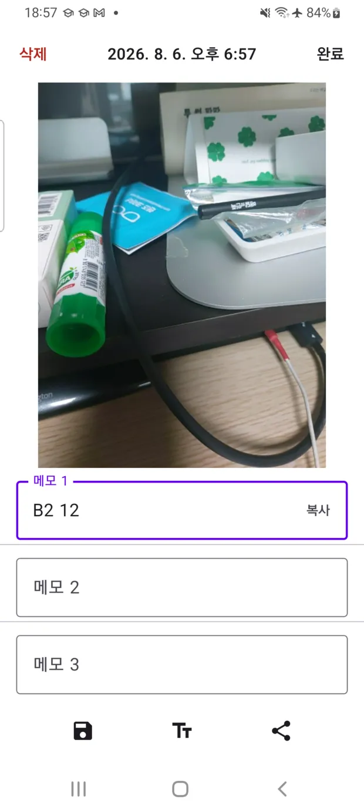
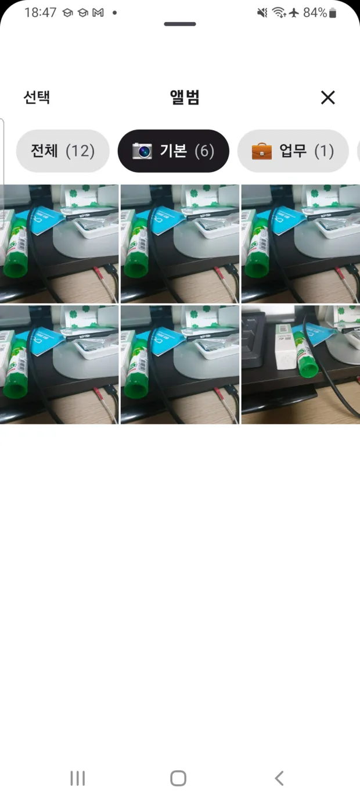
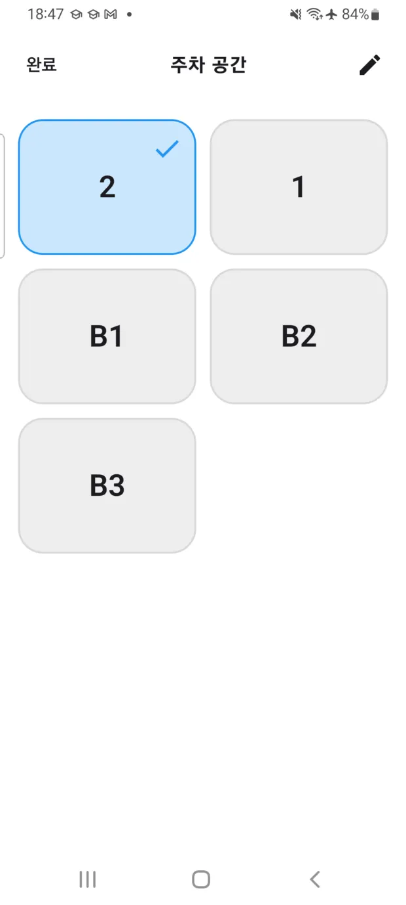
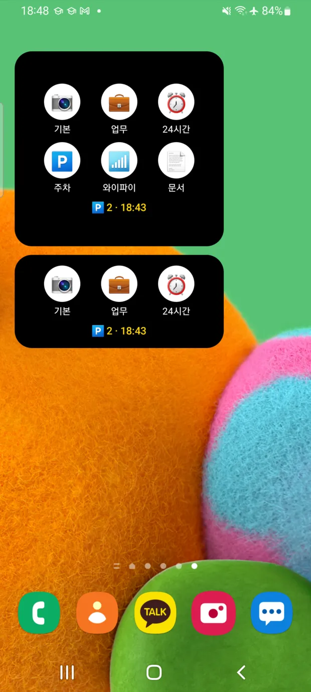

며칠 뒤 지울 사진은
갤러리 대신 SideCam에
주차한 층, 카페 와이파이 비밀번호, 영수증 한 장. 잠깐만 필요한 사진과 메모를 갤러리와 따로 담고, 정해 둔 기간이 지나면 앱이 알아서 지웁니다.

갤러리에 이런 사진,
몇 장이나 있나요?
갤러리는 추억을 담는 곳입니다. 주차한 층과 와이파이 비밀번호까지 담을 곳은 아니죠. 지우려고 앨범을 열면 어디까지 지워야 할지부터 고민이 됩니다.
찍은 다음에 할 일을
셔터가 대신합니다
어떤 셔터로 찍었는지에 따라 촬영 후 벌어지는 일이 달라집니다. 탭 한 번이면 끝입니다.
셔터마다 촬영 후 동작이 다릅니다
기본 셔터 7개가 처음부터 들어 있고, 이름과 이모지(200종 이상), 옵션, 순서를 전부 바꿀 수 있습니다.
- 갤러리에도 저장할지 — 앱 안에만 둘지 선택
- 셔터음 없이 조용히 — 도서관에서도 부담 없이
- 찍고 바로 보여줄지 — 확인이 필요한 사진에
- 메모 키보드 바로 띄우기 — 구역 번호를 잊기 전에
- 얼마 뒤에 지울지 — 30분부터 30일까지 9단계

사진 속 글자를 대신 읽어 적어 둡니다
주차와 와이파이 셔터로 찍으면 사진 속 글자를 인식해 구역 번호나 비밀번호를 메모에 미리 적어 둡니다. 나중에는 메모를 한 번 탭해 복사하면 됩니다.
- 사진 한 장에 메모 3개까지
- 탭 한 번으로 클립보드 복사
- 글자 인식은 기기 안에서만 처리 — 사진은 어디로도 전송되지 않습니다
- 한국어 · 영어 · 일본어 · 중국어 인식

정리는 앱이 합니다
셔터마다 보관 기간을 정해 두면 시간이 지난 사진은 알아서 사라집니다. 정리해야 한다는 사실 자체를 잊어도 괜찮습니다.
- 주차 사진은 열흘, 영수증은 한 달, 잠깐 볼 화면은 30분
- 남기고 싶은 사진은 그때 갤러리에 저장
- 전체 삭제는 생체 인증을 거칩니다

차에서 내리는 순간을 놓치지 않습니다
차량 블루투스 연결이 끊기면 알림으로 알려 줍니다. 자동 실행을 켜 두면 카메라가 곧바로 열립니다.
- 아파트·회사처럼 늘 가는 주차장은 주차 공간을 미리 등록
- 지하 몇 층에 세웠는지 탭 한 번으로 기록
- 30분마다 얼마나 세워 뒀는지 알림
- GPS 대신 내가 찍은 사진으로 기억합니다

필요한 순간에
가장 빨리 열립니다
홈 화면 위젯
원하는 셔터를 탭하면 그 셔터가 선택된 상태로 카메라가 열립니다. 크게 놓으면 저장해 둔 주차 공간과 주차한 시각까지 함께 보입니다.
빠른 설정 타일
알림창만 내리면 바로 촬영. 앱을 찾아 들어갈 필요가 없습니다.
잠금화면 바로가기
잠금을 풀지 않고 찍습니다. 이때는 촬영만 되고 앨범과 설정은 잠긴 채라, 잠깐 남의 손에 넘어가도 사진과 메모는 열리지 않습니다.

사진은 기기 안에
머무릅니다
촬영한 사진과 메모는 앱 안에만 저장됩니다. 서버로 올리지 않고, 계정을 만들 필요도 없습니다. 갤러리에 저장하거나 다른 사람에게 공유하는 일은 직접 누를 때만 일어납니다.
개인정보처리방침 보기- 서버 업로드 없음 · 계정 없음
- 위치(GPS) 권한을 아예 요구하지 않음
- 글자 인식도 기기 안에서 처리
- 다른 앱이 접근할 수 없는 저장 영역
- 전체 삭제는 생체 인증 후에만
자주 묻는 질문
찍은 사진이 갤러리에도 저장되나요?
기본적으로 SideCam 안에만 저장됩니다. 셔터별로 갤러리 저장을 켤 수 있고, 나중에 사진을 열어 직접 갤러리에 저장할 수도 있습니다.
위치(GPS) 정보를 쓰나요?
쓰지 않습니다. 앱에 위치 권한 자체가 없습니다. 주차 위치는 직접 찍은 사진과 입력한 메모, 그리고 미리 등록해 둔 주차 공간으로만 기록됩니다.
무료인가요? 계정이 필요한가요?
무료이며 회원가입이나 로그인이 필요 없습니다. 사진과 메모는 서버로 전송되지 않고 기기 안에만 저장됩니다.
자동 삭제된 사진은 되살릴 수 있나요?
되살릴 수 없습니다. 오래 남길 사진은 갤러리에 저장하거나, 해당 셔터의 자동 삭제를 꺼 두세요. 보관 기간은 30분부터 30일까지 9단계 중에서 고를 수 있습니다.
기존 주차카메라 앱을 쓰고 있었는데 데이터는 어떻게 되나요?
주차카메라가 SideCam으로 바뀐 것이라 업데이트만 하면 됩니다. 지금까지 저장한 주차 사진과 주차 공간은 그대로 남아 있습니다.
어떤 기기에서 쓸 수 있나요?
Android 9.0 이상 기기에서 사용할 수 있습니다. 한국어, 영어, 일본어, 중국어(간체·번체), 독일어, 프랑스어, 베트남어를 지원합니다.